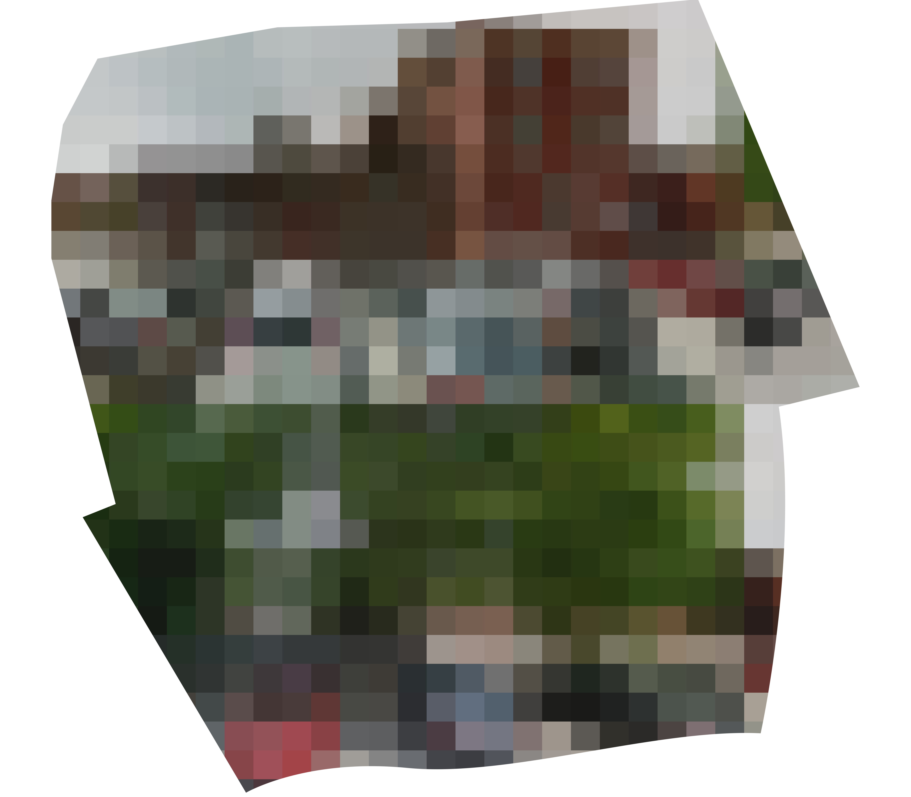
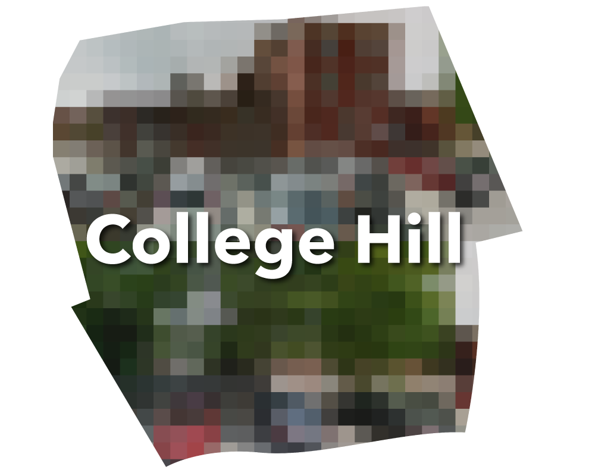
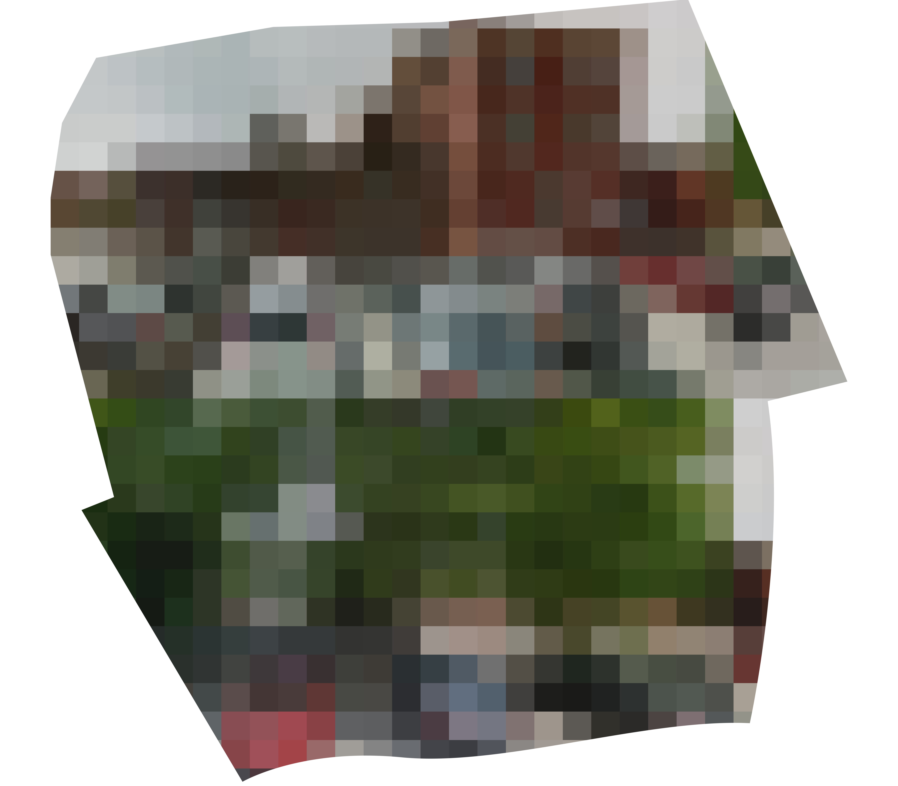
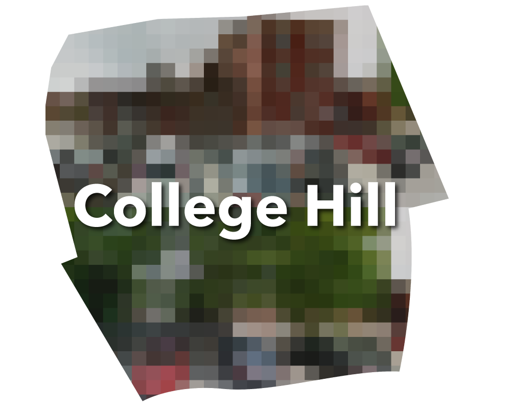

Wondering how the essence of your hood was captured so perfectly?
To create filters for each neighborhood, we sourced our imagery from google maps by searching the name of your neighborhood. and used the default location for that neighborhood's street view. Each was cropped using the same scripting process along with uniform pixelation. To top it off, each filter is given the neighborhood's shape and name.
 


